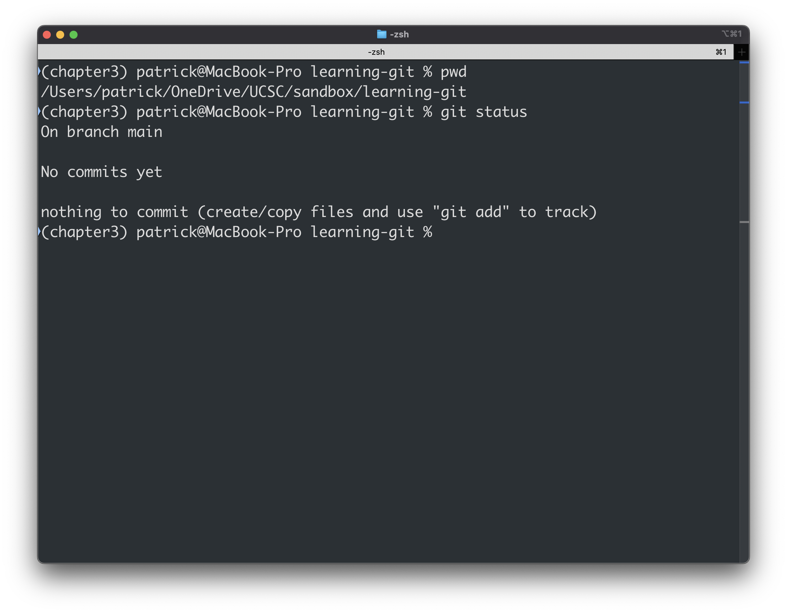
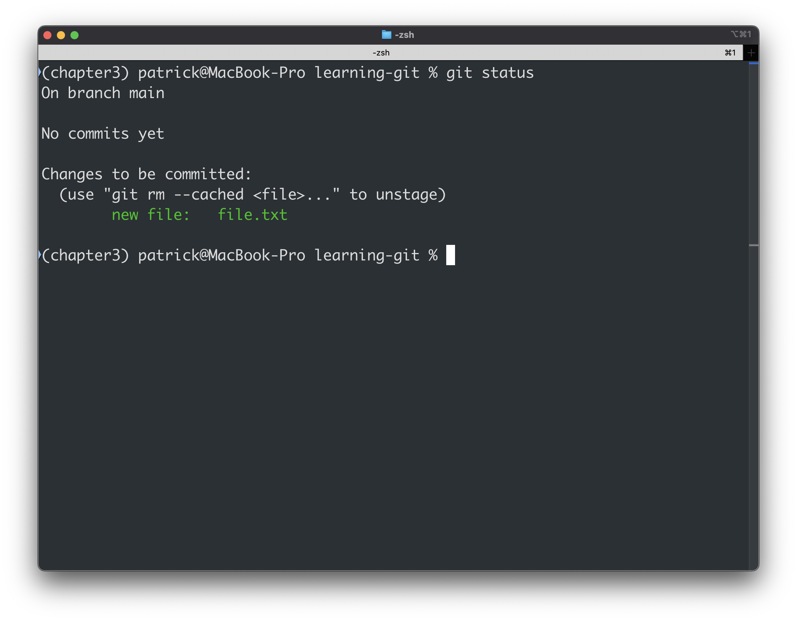
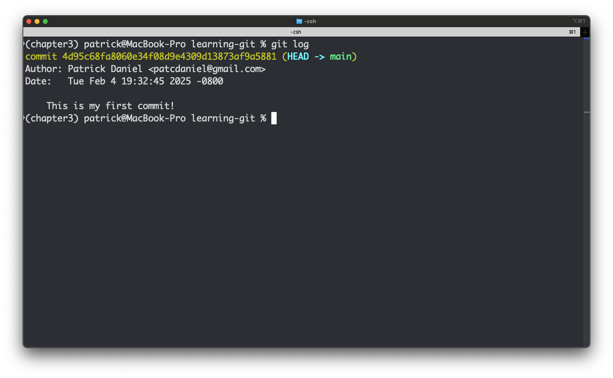
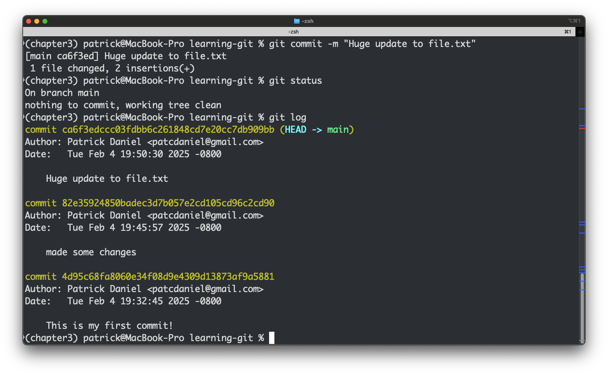

A guide to demystifying and getting started with version control.
Version Control
A way of tracking and managing changes made to files overtime.
git is very popular, but other open VC include:
Mercurial
SVN
Source Code Control System
What is git?
Free, open source, distributed, version control system
Git is a software for managing software development through time and space.
Created by: Linus Torvalds (created the Linux Kernel)
What about Github?
Github is a Microsoft owned business service that is used to store and distribute code repositories (and many other very useful services). Some other DevOP git-based repository:
bitbucket (Atlassian)
gitlab (open core: git.ucsc.edu)
HuggingFace (for Models and Datasets (large data))
These services all use the git software as the foundation for Version Control.
What problems does VC solve?
Scenario
You've made some big changes to your code and things aren't working and now your results make no sense. Now you have to thumb through 10 different files called something like `final_PLS_MBAY_Fall_v2_new.py`.
Scenario
You are working with a collaborator on an analysis and want to incorporate some changes they made without having to start over on your changes.
Scenario
You published some results and are getting questions about what parameters you used for a model, but you have since developed the project further and don't remeber what you did.
Scenario
You need to send a project (code,data,figures) to collaborator but things are getting out of control with the number of files.
Version contrtol
VC Enables:
Information Proveneance Reproducabilty Tidiness
These are all virtues that fall under the FAIR science framework.
However, GitHUB is NOT a Data Repository
There is no guaranetee that something you upload to github will persist.
So if you want to archive data or code with a paper or dataset there are other places to put it so that it will not dissapear one day if you lose your account or Microsoft changes their business models.
See Zenodo or DataOne or more domain specific data repositories (GBIF, OBIS, WOD)
Basic GIT workflow
Create files - these may contain text, code or both.
Work on these files, by changing, deleting or adding new content.
Create a snapshot of the file status (also known as version) at this time.
Document what was changed in the version history of that file.
Linear Development
Suppose you need to get back to a previous version of your code.
This alone solves a lot of problems
Non-linear Development
Adding a Feature:
You maybe working on a new feature that allows you to read different types of files, but processes still runs the same analysis.
When that standalone feature is completed, it can be added back into the main working branch
Non-linear Development
Real Life Development:
Here things may get more complicated, suppose you start and abandon something (Feature B) or your data-reader gets expanded further during development (Feature A to Feature A-1).
This may seem like overkill for a project that you are working on yourself, but if you develop a popular package and others start to ask for features or better yet, offer to add their own features, this is what modern software development looks like.
Start Your Engines
The basics of Git
git init:initialize a git repository in your current directory. This will create a hidden file called .git. git add file.txt:Tells git to start tracking this file for changes. More likely you will add many files at once. git commit:Tells git that you want to commit all of the changes to the tracked files (from the previous step). git push:Push the changes to a remote repository like Github or gitlab
Try it out
Let’s all try this out in the command line:
Open a terminal.
Make a new directory: mkdir learning-git
Move into that diretory: cd learning-git
Initialize a repo: git init
Check what is going on: git status (you should see some about ‘No commits yet’, if it says fatal, no repo was initialized)
Checking if it worked
Try running: git status 
Now Make a file and add it to git
touch file.txt #This will make an empty file call file.txtgit add file.txtgit status
These are ‘staged’ changes 
Commit!
git commit
git expects a message when you make a commit, so it may open vim editor.
vim: type in your messages, press esc, then :x to write out to the file. Ask if you are stuck!
Tip: Make you messages meaningful, but short
Instead, include an inline message:
git commit -m"This is my commit message"
git log

This shows our last commit, the hash associated with it, and the message
Excercise
Add some text to the file.txt
Add the file to git (hint: git add . will add all files in dir)
Commit the staged files
View the log
Reverting to Old Commits
What if you want to go back to an older commit?

Last Commit: git revert HEAD (this is like a reverse commit)
Older Commit: git checkout 4d95c68fa8060e34f08d9e4309d13873af9a5881 (enter the hash of that commit, not mine)
This called a “detached HEAD” –> If you want to go in a direction you need a branch
Branches: Creating
Those splits are called branches, this a nice way to try something without writing over the main branch.
To Create and Switch to a new Branch:
git checkout -b name_of_your_new_branch
Branches: Switching Between
git branch
show different branches
git checkout name_of_branch
change to the name_of_branch branch
git branch -D name_of_branch
Delete name_of_branch branch
Note: main is the default branch. (Used to be master, but this has been phased out)
Excercise:
Create and checkout a new branch. Add a file to it and commit the new file (and any other changes)
Merging Branches
Once you have completed the cool feature that you want to integrate into the main branch, you will need to merge.
Move into the the branch that you want merged into.
git merge name_of_branch
You can get into trouble here if you make changes to your main branch and that will conflict with the changes make in your other branch that you are trying to merge in. This is a bit beyond the scope of what we are talking about here, but it will be illustrated later.